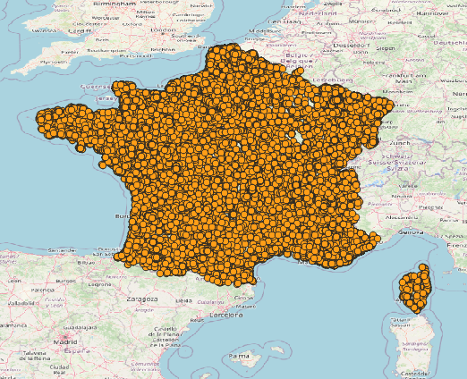
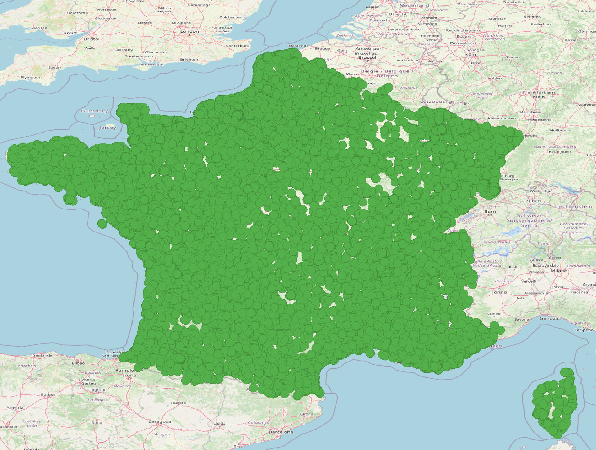
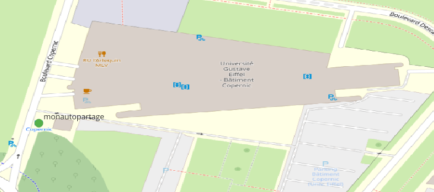
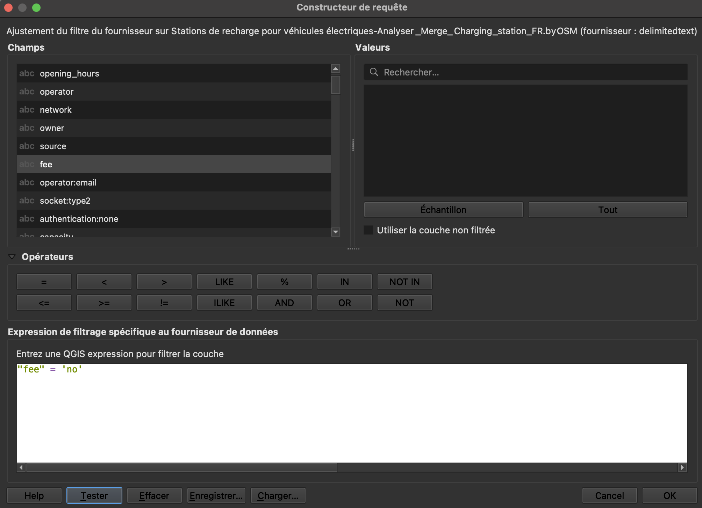
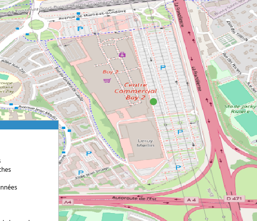
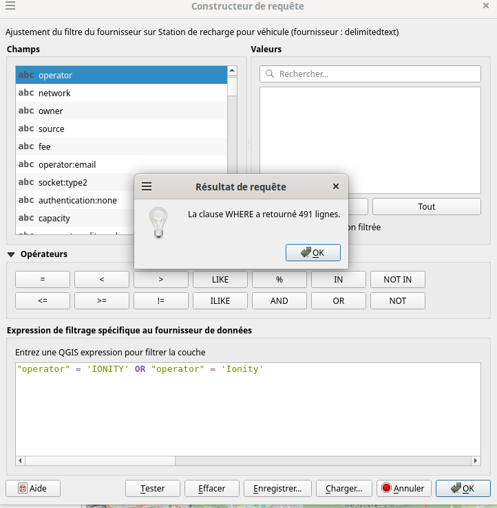
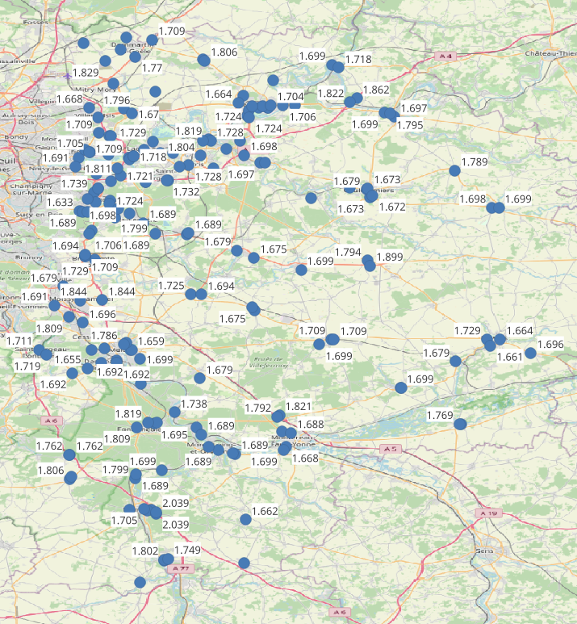
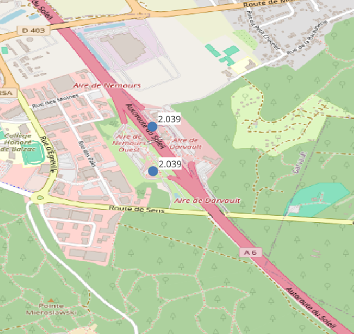
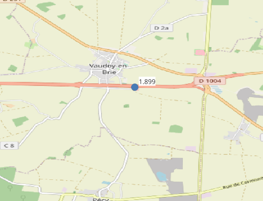
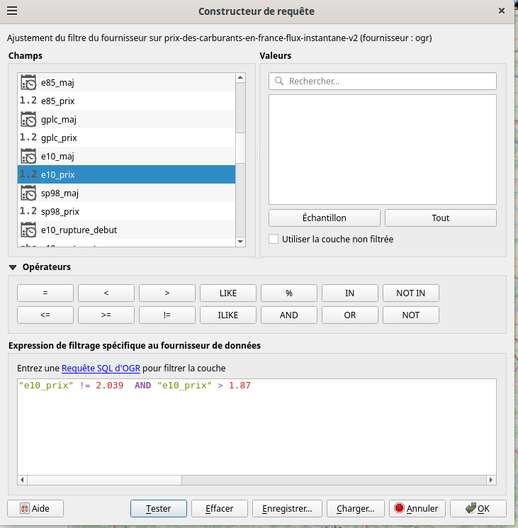

Compte rendu TP4
Exercice 1 - QGIS - Stratégie de placement des bornes IONITY
-
Un CRS est simplement un système qui permet de dire où se trouve un point sur la Terre. WGS 84 est un type de CRS. C'est le standard utilisé en cartographie 2D.
-
La remarque dit qu’EPSG:3857 n’est pas considéré comme un vrai système géodésique, parce qu’il traite la Terre comme une sphère plutôt que comme un ellipsoïde, comme le fait WGS 84. Cette simplification entraîne des erreurs : environ 0,7 % sur l’échelle, et jusqu’à 43 km de différence en northing sur la carte (soit environ 21 km sur le terrain).
-
Latitude : 48.8533860
Longitude : 2.3488014 -

-

-
Le nom de l'opérateur est monautopartage.

-
Voici le filtrage appliqué pour avoir uniquement les bornes gratuites :

La borne gratuite la plus proche du bâtiment Copernic est celle qui se trouve dans le centre commercial Bay2.

-
Voici le filtrage appliqué pour avoir uniquement les bornes IONITY :

La stratégie de IONITY pour le placement de ses bornes de recharge est de les placer sur les autoroutes.
Exercice 2 - QGIS - Prix de l'essence E10 en Seine et Marne
-

-

-
Les stations les plus chères sont celles qui se trouvent à Nemours où l'essence coûte 2.039€ car c'est un aire de repos.

-
Si on enlève les stations à Nemours, c'est celle de Vaudoy en Brie qui est la station d'essence la plus chère. Le prix de l'essence est à 1.899€.

Le filtre appliqué :
